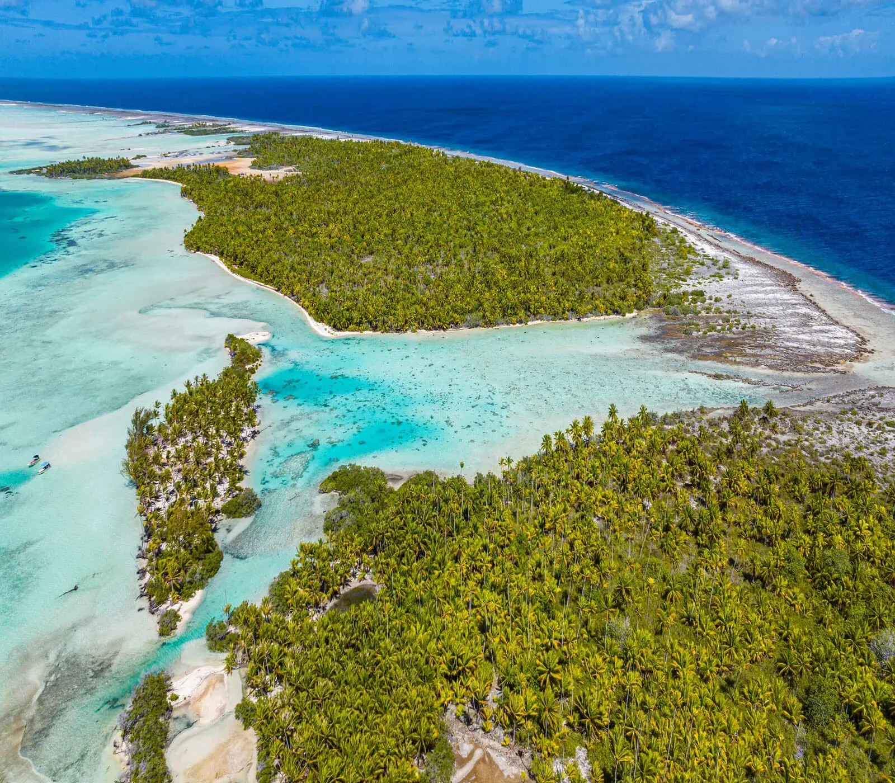
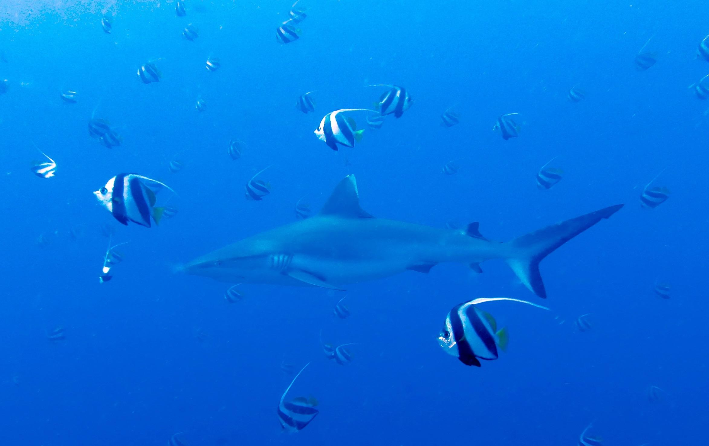
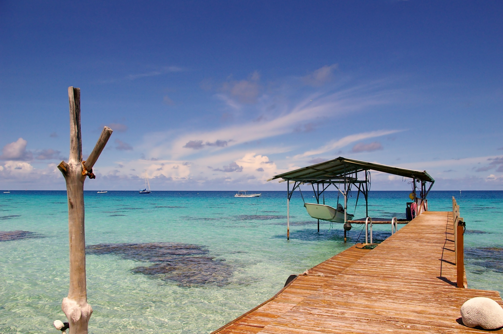
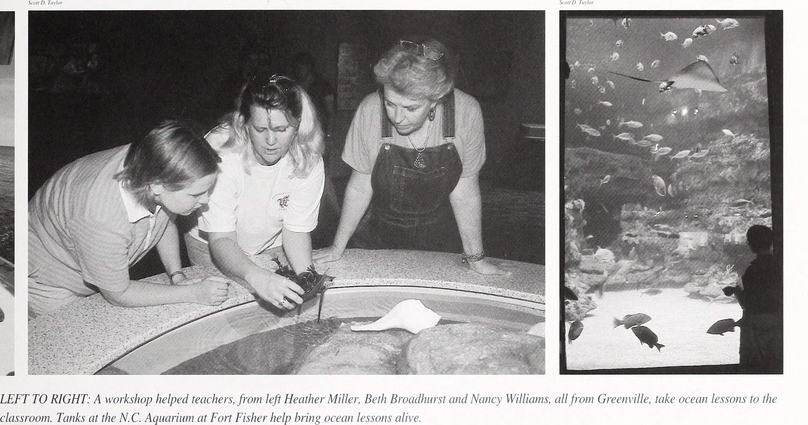
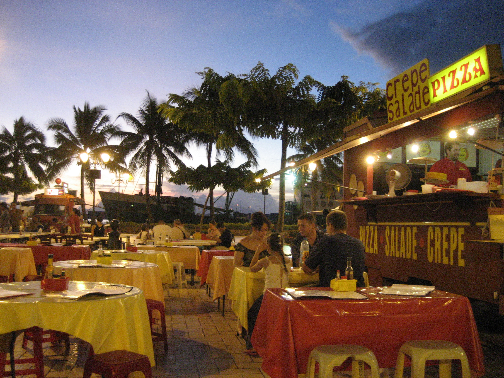
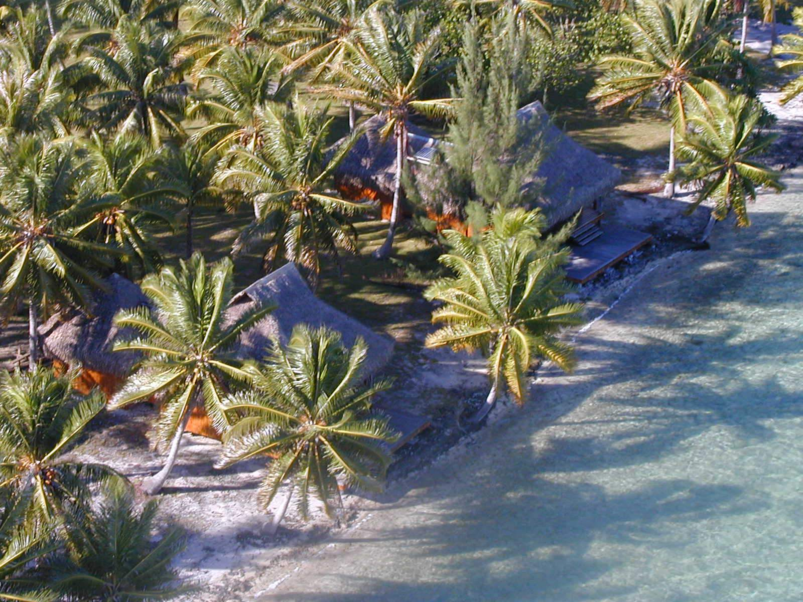
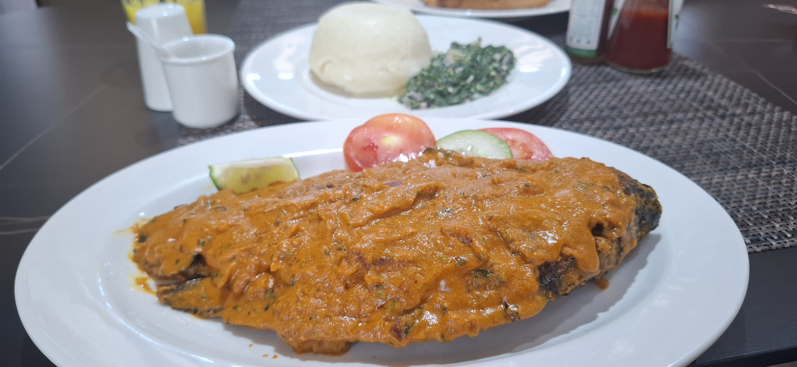
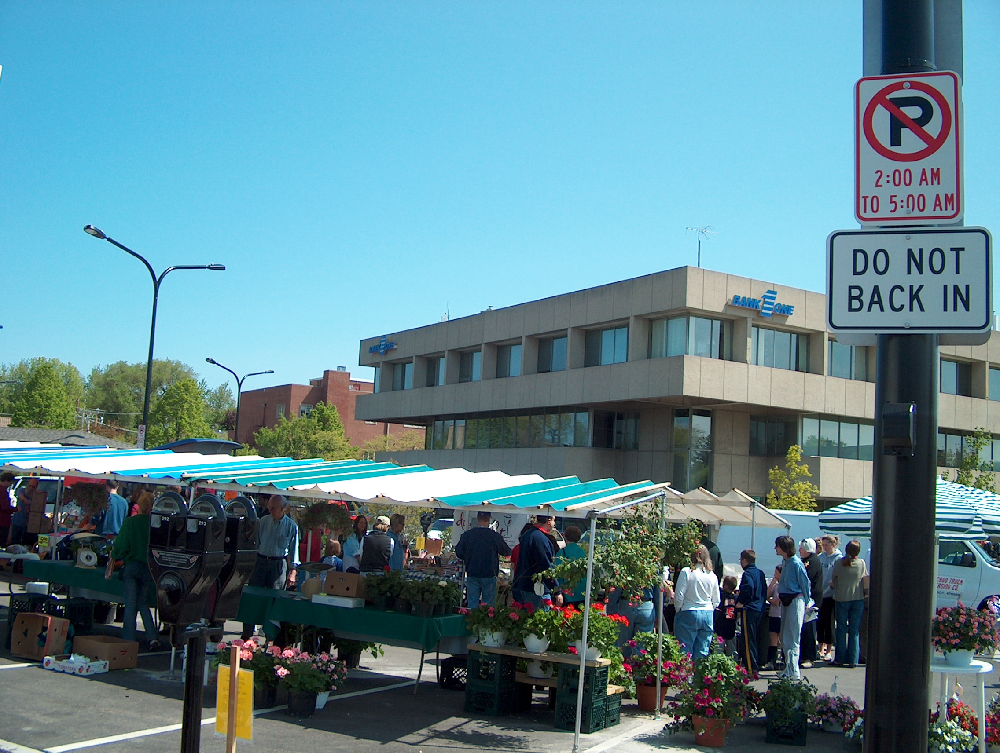
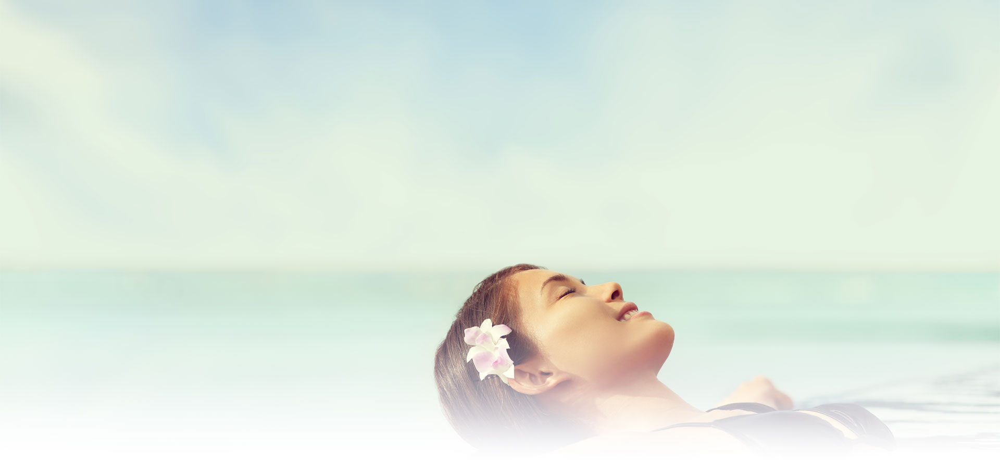
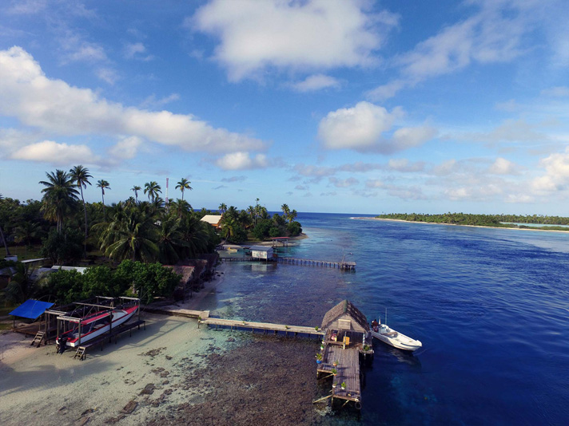

A slender ribbon of coral adrift in the Tuamotus, Fakarava is French Polynesia at its most unspoiled. The lagoon glows in impossible shades of turquoise, the reef passes teem with sharks and manta rays, and the tiny village of Rotoava still runs on coconut time. For a family that wants to trade crowds for constellations, this is the place — raw, remote, and utterly unforgettable.
Getting There & Return
| Option | Route | Class | Time | Layover | Per Person | Family ×6 |
|---|---|---|---|---|---|---|
| Outbound — Dec 18 | ||||||
| Air Tahiti Nui + Air Tahiti | SFO → PPT → FAV | Economy | 12h 30m | 2h in Papeete | ~$1,850 | ~$11,100 |
| Air Tahiti Nui + Air Tahiti | SFO → PPT → FAV | Business | 12h 30m | 2h in Papeete | ~$5,200 | ~$31,200 |
| French Bee + Air Tahiti | SFO → PPT → FAV | Economy | 12h 45m | 3h in Papeete | ~$1,450 | ~$8,700 |
| Return — Jan 2 | ||||||
| Air Tahiti + Air Tahiti Nui | FAV → PPT → SFO | Economy | 12h 30m | 2h in Papeete | ~$1,850 | ~$11,100 |
| Air Tahiti + Air Tahiti Nui | FAV → PPT → SFO | Business | 12h 30m | 2h in Papeete | ~$5,200 | ~$31,200 |
Highlights

Garuae Pass — North Pass Drift
The world's widest atoll pass (1.6 km). Drift snorkel through warm crystal-clear water alongside manta rays, dolphins, and reef sharks. Safe for older kids with a guide.

Tumakohua — South Pass Wall of Sharks
Legendary dive site where 300+ grey reef sharks patrol a narrow channel. Adults-only experience; one of the top 10 dive sites on Earth.

Pink Sand Motu Expedition
Paddle across the lagoon to uninhabited motus with pink-sand beaches. Pack a picnic and snorkel gear — perfect family adventure.

Rotoava Village Walking Tour
Stroll through the main village to see the 19th-century coral church, meet local pearl farmers, and browse shell jewelry. A gentle intro to Tuamotu life.

Bioluminescent Night Lagoon Tour
Wade or kayak into the lagoon at night and watch the water glow electric blue. A magical experience for kids — bring waterproof cameras.
Food & Dining

Havaiki Lodge Restaurant
Overwater dining with Polynesian-French fusion — fresh poisson cru, grilled mahi-mahi, and coconut crème brûlée. Family-friendly with kids' portions available.

Tetamanu Village Table d'Hôte
Communal dinners at the remote south-end pension. Chef cooks the day's catch over coconut-husk fire. A once-in-a-lifetime dining experience.

Snack Kaimoana
The village's favorite roadside stand in Rotoava. Grilled fish plates, poisson cru wraps, and fresh coconut water. Pure local flavor, cash only.

Pension Veke Veke Kitchen
Home-style pension meals — fried breadfruit, tuna tartare, and banana cake. Reservations required; they cook for guests and walk-ins alike.

Rotoava Bakery & Café
Freshly baked baguettes, pain au chocolat, and French-Polynesian pastries. Opens at 6am — a perfect breakfast stop before a dive.
Where to Stay

Havaiki LodgeHavaiki Lodge
Charming overwater bungalows on the lagoon. Snorkeling right off the deck, kayaks included. Warm Polynesian hospitality and excellent on-site dining.

Tetamanu VillageTetamanu Village
Remote eco-lodge at the South Pass — world-class diving from your doorstep. Solar-powered, 6 bungalows total. Truly off-the-grid paradise.
Weather — Late December
Cultural Connections
Tahitian Black Pearl Farm Visit
Tour a working pearl farm in the lagoon. Learn how Pinctada margaritifera oysters produce the famous black pearls of the Tuamotus. Kids can hold oysters and see the grafting process.
Historic Coral Church of Rotoava
Visit the 19th-century Protestant church built entirely from coral blocks. One of the oldest standing structures in the Tuamotus and still active for Sunday services.
UNESCO Biosphere Reserve
Fakarava is one of 7 atolls in the Commune of Fakarava Biosphere Reserve. Learn about marine conservation and sustainable fishing practices from local guides.
Traditional Net Fishing
Join local fishermen in the lagoon for traditional "stone fishing" — an ancient Polynesian technique where the community works together to herd fish into shallow water.
Tuamotu Weaving Workshop
Learn pandanus leaf weaving from village artisans. Make your own hat or basket in a hands-on session — a beautiful souvenir and a genuine cultural exchange.